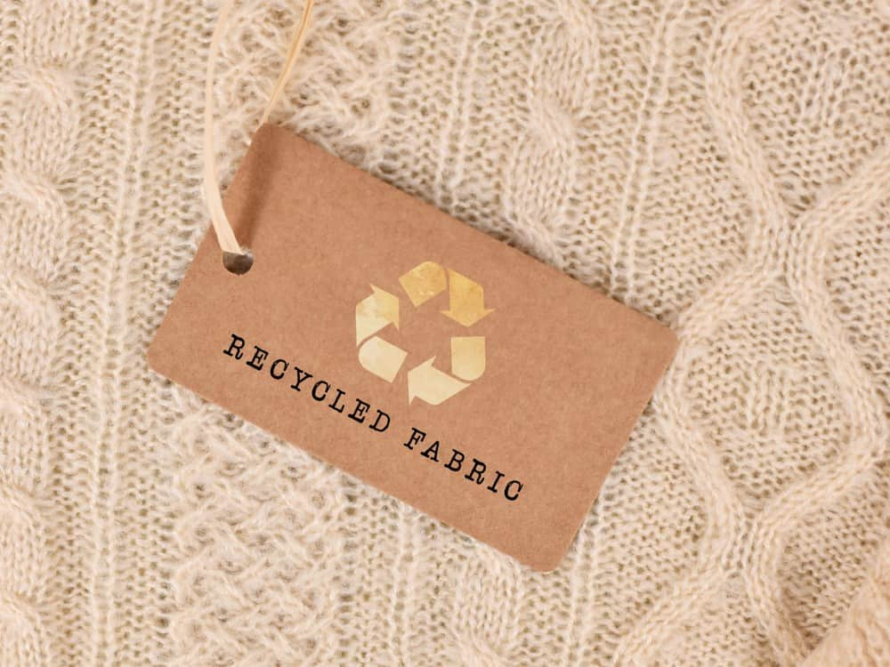

Fast Fashion And textile waste
The quick creation of inexpensive garments based on current trends is known as fast fashion. As a result, there are frequent changes in fashion, cheap pricing, and rapid turnover. However, because of their short shelf lives and low quality, it produces a substantial amount of textile waste. This waste adds to resource depletion, labour exploitation, and environmental problems. To solve this, we must adopt sustainable behaviours, such as buying clothing of higher quality, recycling, and raising consumer awareness

Articles
Regulations And Initiatives

The United Nations Alliance for Sustainable Fashion
A global project called the United Nations Alliance for Sustainable Fashion seeks to encourage sustainable practises in the fashion sector. To address the environmental and social implications of the fashion industry, it brings together a variety of stakeholders, including governments, corporations, and civil society. In order to promote positive change towards more ethical and sustainable fashion production, consumption, and disposal, the alliance supports collaboration, information exchange, and innovation. Reducing waste, enhancing working conditions, encouraging circular fashion models, and spreading awareness of the significance of sustainable fashion choices are some of its key areas.
Sustainable Fashion Policy
The Ministry of Textiles established National Handloom Day in 2020, with the theme "Handloom for Atmanirbhar Bharat." The policy's goal is to promote sustainable fashion and textiles, encourage local craftspeople, and lessen the fashion industry's environmental effect. This initiative also aims to reduce the carbon emmision done by the fashion industry and replace them with sustainable indiginious fabric like khadi .
The Fashion Industry Charter for Climate Action
The Fashion Industry Charter for Climate Action is a commitment launched by the UNFCCC in 2018. It brings together fashion industry stakeholders to reduce greenhouse gas emissions and promote sustainability. Key principles include setting science-based emission reduction targets, adopting circular economy practices, using sustainable materials, and increasing consumer awareness. It emphasizes collaboration, transparency, and innovation to achieve its goals.